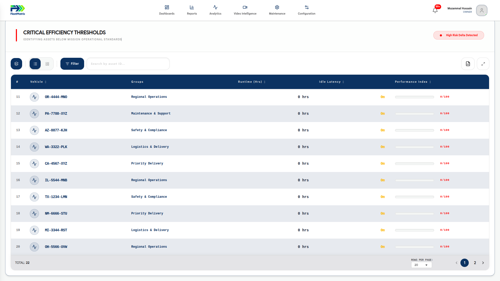
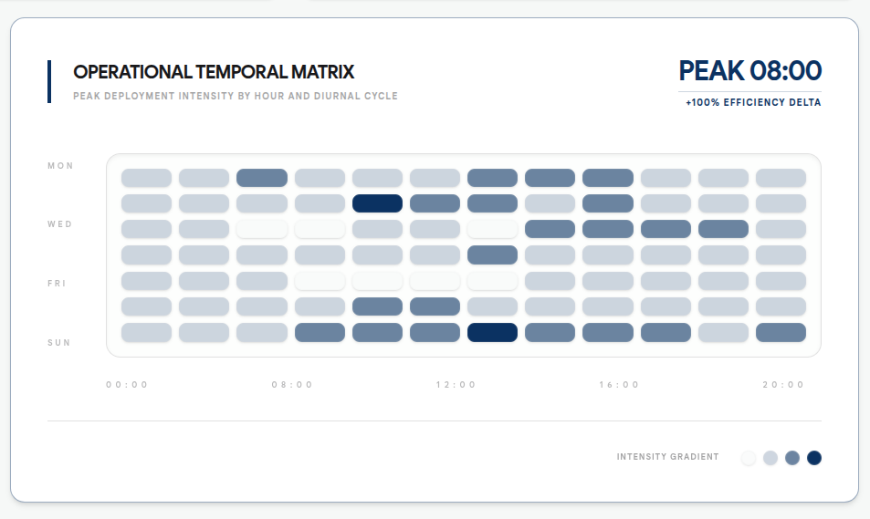
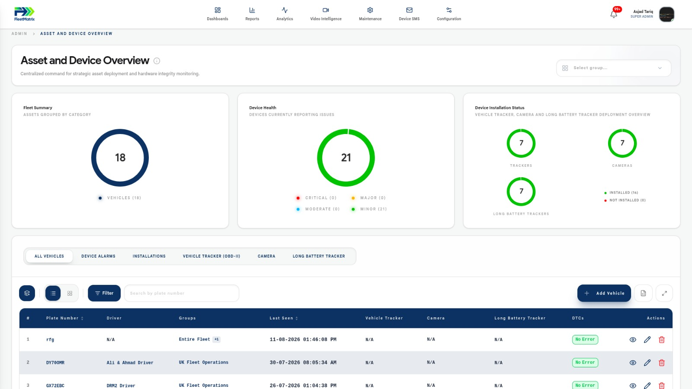

Secure, monitor, and optimise every high-value asset.
Fleetmatrix Asset Tracking combines GPS technology with intelligent analytics to provide real-time visibility into your trailers, heavy equipment, and non-powered assets. Prevent theft, improve utilization, and streamline maintenance operations. All from a single, intuitive dashboard.

Asset Management Software
Managing a dispersed fleet of valuable assets without digital visibility leads to operational blind spots, inefficient utilization, and increased risk of loss. Our Asset Management Software transforms physical equipment into trackable data points, ensuring you always know where your assets are and how they are performing.
What You Can Track
Heavy Equipment Monitoring
Keep tabs on excavators, bulldozers, and cranes across multiple job sites to ensure maximum utilization.
Trailer Tracking
Monitor trailer locations, door status, and cargo conditions to optimize routing and improve security.
High Value Assets
Track generators, light towers, and specialized tools with ruggedized, long-lasting GPS beacons.
Always know the status of your assets
Eliminate the guesswork of manual inventory checks. Gain instant, centralized visibility into the real-time location and operational status of every piece of equipment in your fleet.
- double_arrow Live GPS pinpointing on interactive maps.
- double_arrow Custom geofence alerts for unauthorized movement.
- double_arrow Instant status updates (Active, Idle, Maintenance).
- double_arrow Historical location playback for route analysis.
- double_arrow Automated daily yard checks and inventory reports.


Optimise Asset Performance
Stop paying for equipment that sits idle. Use actionable utilization data to right-size your fleet, improve job bidding accuracy, and ensure every asset is delivering ROI.
- double_arrow Track actual engine hours vs. physical presence.
- double_arrow Identify hoarding behavior on job sites.
- double_arrow Compare performance metrics across asset classes.
- double_arrow Automated utilization threshold alerts.
- double_arrow Exportable data for ERP integration and billing.
Simple Asset Maintenance Tracking
Transition from reactive repairs to predictive maintenance. Schedule service based on actual usage metrics to extend asset lifespans and prevent costly downtime.
- double_arrow Usage-based PM (Preventative Maintenance) scheduling.
- double_arrow Digital DVIRs (Driver Vehicle Inspection Reports).
- double_arrow Automated service reminders via email/SMS.
- double_arrow Centralized digital service records and compliance logs.
- double_arrow Defect tracking to resolution workflows.

Built for the Field
Durable GPS Devices
Rugged hardware designed to withstand the harshest industrial environments.
Extended Battery Life
Long-lasting power for non-powered assets that stay in the field for months.
3G / 4G Connectivity
Reliable data transmission across global cellular networks for constant updates.
Customisable Tracking
Adjust ping frequency based on movement or specific operational needs.
Weatherproof Design
IP67-rated enclosures protect against dust, water, and extreme temperatures.
Mobile Access
Manage your entire fleet from any device with our responsive mobile app.
Instant Alerts
Real-time notifications for geofence breaches, low battery, or movement.
Frequently Asked Questions
What types of assets can I track? expand_more
How long does the battery last on non-powered trackers? expand_more
Is the hardware weatherproof? expand_more
Can I set up alerts for unauthorized movement? expand_more
Does the software integrate with my existing ERP? expand_more
How often does the location update? expand_more
Can I track engine hours for maintenance? expand_more
Is there a mobile app available? expand_more
What happens if an asset is stolen? expand_more
Do you provide installation services? expand_more
Protect what powers your business.
See how Fleetmatrix gives you total visibility over every asset, wherever it operates — reducing theft, maximising utilisation, and extending equipment life.